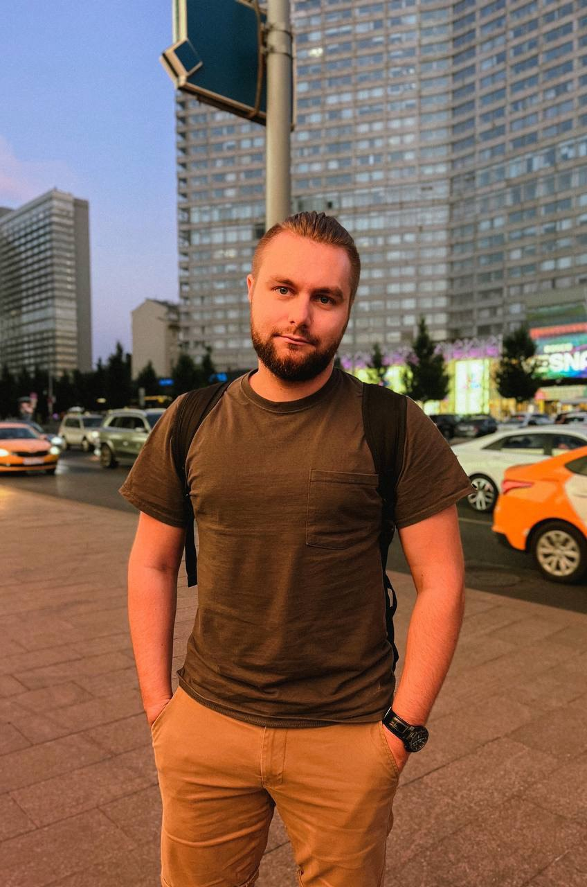

Мужчина, 24 года, родился 13 марта 1998
Как со мной связаться:
- Tel: +7 (915) 1964817 — предпочитаемый способ связи
- Email: shabelnikkv@gmail.com
- Telegram:@SKVMF
- ВК:Шабельник К.В.
Проживает: Москва
Гражданство: Россия, есть разрешение на работу: Россия
Не готов к переезду, готов к командировкам
Желаемая должность и зарплата
Manual QA Engineer
Специализации: Тестировщик
Занятость: проектная работа, полная занятость
График работы: удаленная работа, гибкий график, полный день
Желательное время в пути до работы: не более полутора часов
Компании в которых работал
SupplyShift inc.
США, www.supplyshift.net/
Опыт работы — 6 лет 2 месяца, Сентябрь 2021 — настоящее время 1 год 1 месяц
Информационные технологии, системная интеграция, интернет
Разработка программного обеспечения
Системная интеграция, автоматизации технологических и бизнес-процессов предприятия, ИТ-консалтинг
Должность: Junior QA engineer
Обязаности и навыки:
- Планирование процесса тестировки;
- Написание тестовых случаев (тестовых сценариев);
- Проведение функционального тестирования;
- Определение проблемных зон и добавление их в систему отслеживания;
- Обсуждение исправлений с разработчиками;
- Отслеживание хода задач;
- Уверенное использование Jira и Confluence;
- Базовые знания SQL на уровне простых запросов;
- Опыт тестирования Web-приложений и моб. приложений;
- Опыт работы в Allure test ops на уровне уверенного использования.
- Опыт работы с Datadog на хорошем уровне;
- Опыт работы в Postman на хорошем уровне;
- Опыт работы с Git на хорошем уровне;
- Опыт работы DevTools на хорошем уровне;
- Опыт обучения интеграции тестировщиков в компании;
- Опыт работы в зарубежной компании.
Mice Tours
Москва, www.tmice.ru
Опыт работы — 6 лет 2 месяца, Август 2016 — Март 2022 настоящее время 5 год 8 месяц
СМИ, маркетинг, реклама, BTL, PR, дизайн, продюсирование
Маркетинговые, рекламные, BTL, дизайнерские, Event-, PR-агентства, организация выставок
Должность: Project manager
Обязаности и навыки:
- Организация мероприятий;
- Общение с Заказчиком;
- Управление коллективом до 15 человек;
- Составление смет;
- Контроль тайминга мероприятия;
- Сопровождение клиентов;
- Ведение переговоров;
- Создание концепций мероприятий;
- Мною было реализовано больше 500 проектов
Образование: